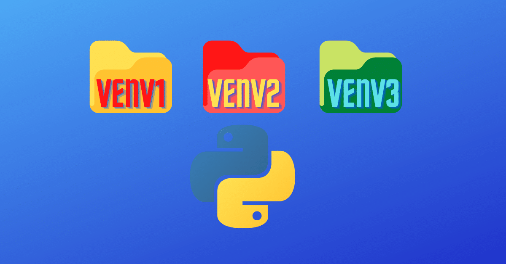

파이썬으로 작성된 패키지 라이브러리를 관리해주는 시스템
PyPi에서 패키지를 검색 할 수 있다.
$ pip install <패키지 이름>
$ pip install pyvisa
$ pip uninstall <패키지 이름>
$ pip list
pipenv란 pipenv는 파이썬에서 패키지를 프로젝트 단위로 관리할 수 있도록 도와주는 패키지 관리도구 기본적으로 pip를 기반으로 동작하지만, 프로젝트 별로 격리된 가상 환경과 프로젝트 단위의 패키지 관리 메커니즘을 제공합니다. 
pipenv 설치
$ pip install pipenv
$ cd {project folder}
$ pipenv --python 3.7
[[source]]
url = "https://pypi.org/simple"
verify_ssl = true
name = "pypi"
[packages]
[dev-packages]
[requires]
python_version = "3.7"
$ pipenv install pyvisa
Pipfile에 pyvisa가 자동으로 추가됨
...
[packages]
pyvisa = "*"
...
$ pipenv uninstall pyvisa
$ pipenv run python test.py
import pyvisa as visa
rm = visa.ResourceManager()
vi = rm.open_resource(f'TCPIP::172.25.230.81::INSTR')
idn = vi.query('*IDN?')
print(idn)
$ pipenv install pyinstaller --dev
$ pipenv run pyinstaller --onefile --icon=RSKSW_Icon.ico test.py
기본 아이콘을 사용하는 경우 --icon옵션 제거하면 됨
$ pipenv install autopep8 --dev
{
...
"editor.formatOnSave": true,
"[python]": {
"editor.defaultFormatter": "ms-python.python"
}
}